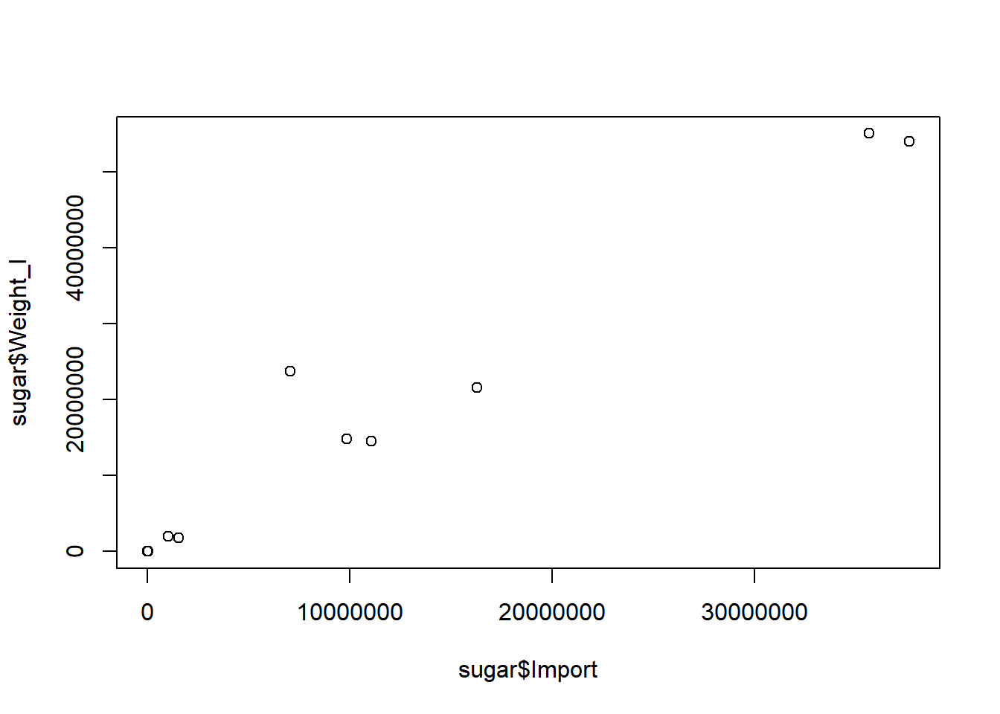
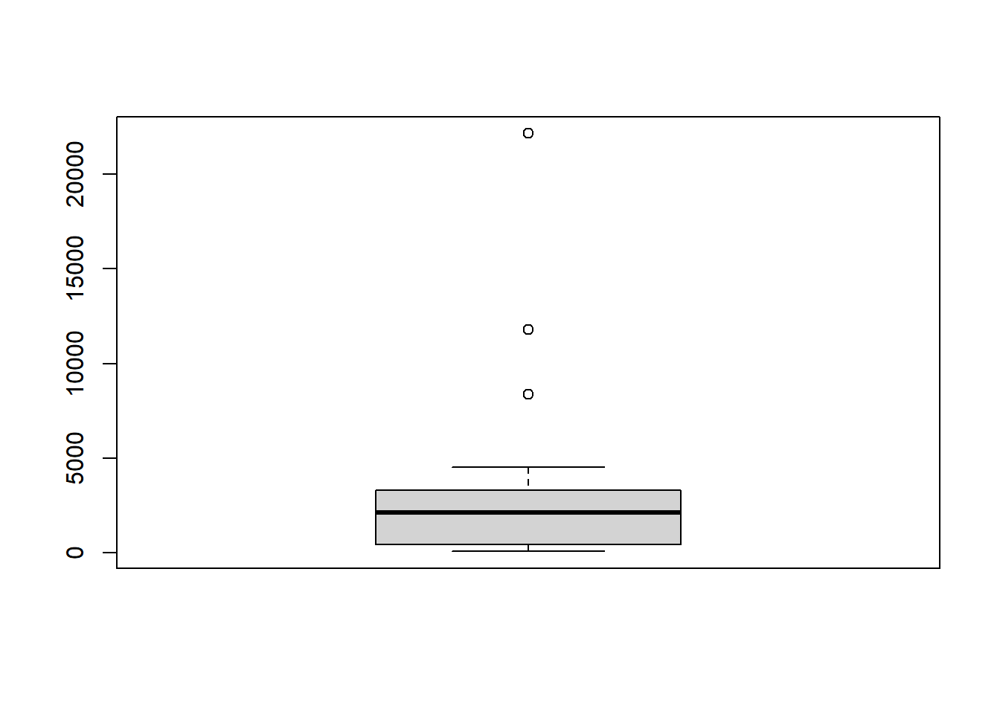

Chapter 22 Intermediate Importing Data in R
22.1 Import from databases-1
22.1.1 Connect to a database
Database Management System
DBMS
Open source
- MySQL, PostgreSQL, SQLite
Proprietary
- Oracle Database, Microsoft/ SQL Server
SQL = Structured Query Language
- all of above implementations use SQL
Databases in R
Different R packages, e.g,
MySQL: RMySQL
PostgresSQL: RPostgresSQL
Conventions specified in
DBIto interact with the database- DBI is an interface, and RMySQL is the implementation
22.1.1.1 Establish a connection
The first step to import data from a SQL database is creating a connection to it. As Filip explained, you need different packages depending on the database you want to connect to. All of these packages do this in a uniform way, as specified in the DBI package.
dbConnect() creates a connection between your R session and a SQL database. The first argument has to be a DBIdriver object, that specifies how connections are made and how data is mapped between R and the database. Specifically for MySQL databases, you can build such a driver with RMySQL::MySQL().
If the MySQL database is a remote database hosted on a server, you’ll also have to specify the following arguments in dbConnect(): dbname, host, port, user and password.
# Load the DBI package
library(DBI)
# Edit dbConnect() call
con <- dbConnect(RMySQL::MySQL(), # specifies the driver
# database name
dbname = "tweater",
# where the database is hosted
host = "courses.csrrinzqubik.us-east-1.rds.amazonaws.com",
# through which port you want to connect
port = 3306,
# credentials to authenticate yourself
user = "student",
password = "datacamp")
# Inspect the connection
con## <MySQLConnection:0,0>You are now connected to the MySQL database tweater.
dbDisconnect(con) is to disconnected after finish work.
22.1.2 Import table data
22.1.2.1 List the database tables
dbListTables() requires the connection object as an input, and outputs a character vector with the table names.
# Build a vector of table names: tables
tables <- dbListTables(con)
# Display structure of tables
str(tables)## chr [1:3] "comments" "tweats" "users"22.1.2.2 Import table
dbReadTable() simply pass it the connection object, followed by the name of the table you want to import. The resulting object is a standard R data frame.
# Import the users table from tweater: users
users <- dbReadTable(con, "users")
# Print users
users## id name login
## 1 1 elisabeth elismith
## 2 2 mike mikey
## 3 3 thea teatime
## 4 4 thomas tomatotom
## 5 5 oliver olivander
## 6 6 kate katebenn
## 7 7 anjali lianja22.1.2.3 Import all tables
Use lapply
# Get table names
table_names <- dbListTables(con)
# Import all tables, conn is the first argument of dbReadTable
tables <- lapply(table_names, dbReadTable, conn = con)
# Print out tables
names(tables) <- table_names
tables## $comments
## id tweat_id user_id message
## 1 1022 87 7 nice!
## 2 1000 77 7 great!
## 3 1011 49 5 love it
## 4 1012 87 1 awesome! thanks!
## 5 1010 88 6 yuck!
## 6 1026 77 4 not my thing!
## 7 1004 49 1 this is fabulous!
## 8 1030 75 6 so easy!
## 9 1025 88 2 oh yes
## 10 1007 49 3 serious?
## 11 1020 77 1 couldn't be better
## 12 1014 77 1 saved my day
##
## $tweats
## id user_id
## 1 75 3
## 2 88 4
## 3 77 6
## 4 87 5
## 5 49 1
## 6 24 7
## post
## 1 break egg. bake egg. eat egg.
## 2 wash strawberries. add ice. blend. enjoy.
## 3 2 slices of bread. add cheese. grill. heaven.
## 4 open and crush avocado. add shrimps. perfect starter.
## 5 nachos. add tomato sauce, minced meat and cheese. oven for 10 mins.
## 6 just eat an apple. simply and healthy.
## date
## 1 2015-09-05
## 2 2015-09-14
## 3 2015-09-21
## 4 2015-09-22
## 5 2015-09-22
## 6 2015-09-24
##
## $users
## id name login
## 1 1 elisabeth elismith
## 2 2 mike mikey
## 3 3 thea teatime
## 4 4 thomas tomatotom
## 5 5 oliver olivander
## 6 6 kate katebenn
## 7 7 anjali lianjaWho posted the tweat on which somebody commented “awesome! thanks!” (comment 1012)? ANS: oliver.
22.2 Import from databases-2
22.2.1 SQL Queries from inside R
As a data scientist, you’ll often be working with huge databases that contain tables with millions of rows. If you want to do some analyses on this data, it’s possible that you only need a fraction of this data. In this case, it’s a good idea to send SQL queries to your database, and only import the data you actually need into R.
dbGetQuery(con, SQLquery), the second argument is an SQL query in the form of a character string.
# Import tweat_id column of comments where user_id is 1: elisabeth
elisabeth <- dbGetQuery(con, "SELECT tweat_id FROM comments
WHERE user_id = 1")
# Print elisabeth
elisabeth## tweat_id
## 1 87
## 2 49
## 3 77
## 4 77# Import post column of tweats where date is higher than '2015-09-21': latest
latest <- dbGetQuery(con, "SELECT post FROM tweats
WHERE date > '2015-09-21'")
# Print latest
latest## post
## 1 open and crush avocado. add shrimps. perfect starter.
## 2 nachos. add tomato sauce, minced meat and cheese. oven for 10 mins.
## 3 just eat an apple. simply and healthy.# Create data frame specific
specific <- dbGetQuery(con, "SELECT message FROM comments
WHERE tweat_id = 77 AND user_id > 4")
# Print specific
specific## message
## 1 great!# Create data frame short
# CHAR_LENGTH() returns the number of characters in a string
short <- dbGetQuery(con, "SELECT id, name FROM users
WHERE CHAR_LENGTH(name) < 5")
# Print short
short## id name
## 1 2 mike
## 2 3 thea
## 3 6 kate# Inner join by key
dbGetQuery(con, "SELECT post, message
FROM tweats INNER JOIN comments on tweats.id = tweat_id
WHERE tweat_id = 77")## post message
## 1 2 slices of bread. add cheese. grill. heaven. great!
## 2 2 slices of bread. add cheese. grill. heaven. not my thing!
## 3 2 slices of bread. add cheese. grill. heaven. couldn't be better
## 4 2 slices of bread. add cheese. grill. heaven. saved my day22.2.2 DBI internals
The combination of dbSendQuery, dbFetch and, dbClearResult gives the exact same result as dbGetQuery did before, so why do this?
dbFetch query calls allow you to specify a maximum number of records to retrieve per fetch. This can be useful when you need to load in tons of records, but want to do this chunk by chunk.
(If you’re working on a super complicated algorithm that involves millions of database records, you might want to consider a treatment of data in chunks.)
22.2.2.1 Send - Fetch - Clear
Behind the dbGetQueryscenes, the following steps are performed:
Sending the specified query with
dbSendQuery();Fetching the result of executing the query on the database with
dbFetch();Clearing the result with
dbClearResult().
It gives you the ability to fetch the query’s result in chunks rather than all at once. You can do this by specifying the n argument inside dbFetch().
# Send query to the database
# Selects comments for the users with an id above 4
res <- dbSendQuery(con, "SELECT * FROM comments
WHERE user_id > 4")
# Use dbFetch() twice
dbFetch(res, n = 2) # import only two records of the query## id tweat_id user_id message
## 1 1022 87 7 nice!
## 2 1000 77 7 great!dbFetch(res) # import all remaining queries (don't specify n)## id tweat_id user_id message
## 1 1011 49 5 love it
## 2 1010 88 6 yuck!
## 3 1030 75 6 so easy!# Clear res
dbClearResult(res)## [1] TRUEdbGetQuery will get all 5 records at once. So above using dbFetch, you first get 2 records by setting n = 2 (first chunk), next get 5-2=3 remaining records (second chunk).
# try what dbGetQuery get
dbGetQuery(con, "SELECT * FROM comments
WHERE user_id > 4")## id tweat_id user_id message
## 1 1022 87 7 nice!
## 2 1000 77 7 great!
## 3 1011 49 5 love it
## 4 1010 88 6 yuck!
## 5 1030 75 6 so easy!22.2.2.2 Disconnect
It’s always polite to manually disconnect from the database afterwards. You do this with the dbDisconnect() function.
# Create the data frame long_tweats
long_tweats <- dbGetQuery(con, "SELECT post, date FROM tweats
WHERE CHAR_LENGTH(post) > 40")
# Print long_tweats
print(long_tweats)## post
## 1 wash strawberries. add ice. blend. enjoy.
## 2 2 slices of bread. add cheese. grill. heaven.
## 3 open and crush avocado. add shrimps. perfect starter.
## 4 nachos. add tomato sauce, minced meat and cheese. oven for 10 mins.
## date
## 1 2015-09-14
## 2 2015-09-21
## 3 2015-09-22
## 4 2015-09-22Disconnect from the database.
# Disconnect from the database
dbDisconnect(con)## [1] TRUE22.3 Import from the web-1
22.3.1 HTTP
HyperText Transfer Protocol
Rules about data exchange between computers
Language of the web
22.3.1.1 Import flat files from the web

R sees it’s a URL, does GET request, and reads in the specific type’s file.
# Load the readr package
library(readr)
# Import the csv file: pools
url_csv <- "http://s3.amazonaws.com/assets.datacamp.com/production/course_1478/datasets/swimming_pools.csv"
pools <- read_csv(url_csv)## Rows: 20 Columns: 4
## ── Column specification ──────────────────────
## Delimiter: ","
## chr (2): Name, Address
## dbl (2): Latitude, Longitude
##
## ℹ Use `spec()` to retrieve the full column specification for this data.
## ℹ Specify the column types or set `show_col_types = FALSE` to quiet this message.# Import the txt file: potatoes
url_delim <- "http://s3.amazonaws.com/assets.datacamp.com/production/course_1478/datasets/potatoes.txt"
potatoes <- read_tsv(url_delim)## Rows: 160 Columns: 8
## ── Column specification ──────────────────────
## Delimiter: "\t"
## dbl (8): area, temp, size, storage, method, texture, flavor, moistness
##
## ℹ Use `spec()` to retrieve the full column specification for this data.
## ℹ Specify the column types or set `show_col_types = FALSE` to quiet this message.# Print pools and potatoes
pools## # A tibble: 20 × 4
## Name Address Latitude Longitude
## <chr> <chr> <dbl> <dbl>
## 1 Acacia Ridge Leisure Centre 1391 Beaudesert… -27.6 153.
## 2 Bellbowrie Pool Sugarwood Stree… -27.6 153.
## 3 Carole Park Cnr Boundary Ro… -27.6 153.
## 4 Centenary Pool (inner City) 400 Gregory Ter… -27.5 153.
## 5 Chermside Pool 375 Hamilton Ro… -27.4 153.
## 6 Colmslie Pool (Morningside) 400 Lytton Road… -27.5 153.
## 7 Spring Hill Baths (inner City) 14 Torrington S… -27.5 153.
## 8 Dunlop Park Pool (Corinda) 794 Oxley Road,… -27.5 153.
## 9 Fortitude Valley Pool 432 Wickham Str… -27.5 153.
## 10 Hibiscus Sports Complex (upper MtGravatt) 90 Klumpp Road,… -27.6 153.
## 11 Ithaca Pool ( Paddington) 131 Caxton Stre… -27.5 153.
## 12 Jindalee Pool 11 Yallambee Ro… -27.5 153.
## 13 Manly Pool 1 Fairlead Cres… -27.5 153.
## 14 Mt Gravatt East Aquatic Centre Cnr wecker Road… -27.5 153.
## 15 Musgrave Park Pool (South Brisbane) 100 Edmonstone … -27.5 153.
## 16 Newmarket Pool 71 Alderson Str… -27.4 153.
## 17 Runcorn Pool 37 Bonemill Roa… -27.6 153.
## 18 Sandgate Pool 231 Flinders Pa… -27.3 153.
## 19 Langlands Parks Pool (Stones Corner) 5 Panitya Stree… -27.5 153.
## 20 Yeronga Park Pool 81 School Road,… -27.5 153.potatoes## # A tibble: 160 × 8
## area temp size storage method texture flavor moistness
## <dbl> <dbl> <dbl> <dbl> <dbl> <dbl> <dbl> <dbl>
## 1 1 1 1 1 1 2.9 3.2 3
## 2 1 1 1 1 2 2.3 2.5 2.6
## 3 1 1 1 1 3 2.5 2.8 2.8
## 4 1 1 1 1 4 2.1 2.9 2.4
## 5 1 1 1 1 5 1.9 2.8 2.2
## 6 1 1 1 2 1 1.8 3 1.7
## 7 1 1 1 2 2 2.6 3.1 2.4
## 8 1 1 1 2 3 3 3 2.9
## 9 1 1 1 2 4 2.2 3.2 2.5
## 10 1 1 1 2 5 2 2.8 1.9
## # ℹ 150 more rows22.3.1.2 Secure importing
In the previous exercises, you have been working with URLs that all start with http://. There is, however, a safer alternative to HTTP, namely HTTPS, which stands for HyperText Transfer Protocol Secure. Just remember this: HTTPS is relatively safe, HTTP is not.
# https URL to the swimming_pools csv file.
url_csv <- "https://s3.amazonaws.com/assets.datacamp.com/production/course_1478/datasets/swimming_pools.csv"
# Import the file using read.csv(): pools1
# .csv referring to contains column names in the first row
pools1 <- read.csv(url_csv)
# Print the structure of pools1
str(pools1)## 'data.frame': 20 obs. of 4 variables:
## $ Name : chr "Acacia Ridge Leisure Centre" "Bellbowrie Pool" "Carole Park" "Centenary Pool (inner City)" ...
## $ Address : chr "1391 Beaudesert Road, Acacia Ridge" "Sugarwood Street, Bellbowrie" "Cnr Boundary Road and Waterford Road Wacol" "400 Gregory Terrace, Spring Hill" ...
## $ Latitude : num -27.6 -27.6 -27.6 -27.5 -27.4 ...
## $ Longitude: num 153 153 153 153 153 ...# Import the file using read_csv(): pools2
pools2 <- read_csv(url_csv)
# Print the structure of pools2
str(pools2)## spc_tbl_ [20 × 4] (S3: spec_tbl_df/tbl_df/tbl/data.frame)
## $ Name : chr [1:20] "Acacia Ridge Leisure Centre" "Bellbowrie Pool" "Carole Park" "Centenary Pool (inner City)" ...
## $ Address : chr [1:20] "1391 Beaudesert Road, Acacia Ridge" "Sugarwood Street, Bellbowrie" "Cnr Boundary Road and Waterford Road Wacol" "400 Gregory Terrace, Spring Hill" ...
## $ Latitude : num [1:20] -27.6 -27.6 -27.6 -27.5 -27.4 ...
## $ Longitude: num [1:20] 153 153 153 153 153 ...
## - attr(*, "spec")=
## .. cols(
## .. Name = col_character(),
## .. Address = col_character(),
## .. Latitude = col_double(),
## .. Longitude = col_double()
## .. )
## - attr(*, "problems")=<externalptr>22.3.2 Downloading files
22.3.2.1 Import Excel files from the web
readxl can’t handle .xls files that are on the internet, so you can first download to local file: download.file(url, file.path()), then import it.
# Load the readxl package
library(readxl)
# Specification of url: url_xls
url_xls <- "http://s3.amazonaws.com/assets.datacamp.com/production/course_1478/datasets/latitude.xls"
# Download file behind URL, name it local_latitude.xls
dest_path <- file.path("data", "local_latitude.xls")
download.file(url_xls, dest_path)
# Import the local .xls file with readxl: excel_readxl
excel_readxl <- read_excel(dest_path)22.3.2.2 Downloading any file securely
With download.file() you can download any kind of file from the web, using HTTP and HTTPS: images, executable files, but also .RData files. An RData file is very efficient format to store R data.
You can load data from an RData file using the load() function, but this function does not accept a URL string as an argument. In this exercise, you’ll first download the RData file securely, and then import the local data file.
# https URL to the wine RData file.
url_rdata <- "https://s3.amazonaws.com/assets.datacamp.com/production/course_1478/datasets/wine.RData"
# Download the wine file to your working directory
download.file(url_rdata, file.path("data", "wine_local.RData"))
# Load the wine data into your workspace using load()
load("data/wine_local.RData")
# Print out the summary of the wine data
summary(wine)## Alcohol Malic acid Ash Alcalinity of ash Magnesium
## Min. :11.0 Min. :0.74 Min. :1.36 Min. :10.6 Min. : 70.0
## 1st Qu.:12.4 1st Qu.:1.60 1st Qu.:2.21 1st Qu.:17.2 1st Qu.: 88.0
## Median :13.1 Median :1.87 Median :2.36 Median :19.5 Median : 98.0
## Mean :13.0 Mean :2.34 Mean :2.37 Mean :19.5 Mean : 99.6
## 3rd Qu.:13.7 3rd Qu.:3.10 3rd Qu.:2.56 3rd Qu.:21.5 3rd Qu.:107.0
## Max. :14.8 Max. :5.80 Max. :3.23 Max. :30.0 Max. :162.0
## Total phenols Flavanoids Nonflavanoid phenols Proanthocyanins
## Min. :0.98 Min. :0.34 Min. :0.130 Min. :0.41
## 1st Qu.:1.74 1st Qu.:1.20 1st Qu.:0.270 1st Qu.:1.25
## Median :2.35 Median :2.13 Median :0.340 Median :1.55
## Mean :2.29 Mean :2.02 Mean :0.362 Mean :1.59
## 3rd Qu.:2.80 3rd Qu.:2.86 3rd Qu.:0.440 3rd Qu.:1.95
## Max. :3.88 Max. :5.08 Max. :0.660 Max. :3.58
## Color intensity Hue Proline
## Min. : 1.28 Min. :1.27 Min. : 278
## 1st Qu.: 3.21 1st Qu.:1.93 1st Qu.: 500
## Median : 4.68 Median :2.78 Median : 672
## Mean : 5.05 Mean :2.60 Mean : 745
## 3rd Qu.: 6.20 3rd Qu.:3.17 3rd Qu.: 985
## Max. :13.00 Max. :4.00 Max. :168022.3.2.3 httr
Downloading a file from the Internet means sending a GET request and receiving the file you asked for. Internally, all the previously discussed functions use a GET request to download files.
httr provides a convenient function, GET() to execute this GET request. The result is a response object, that provides easy access to the status code, content-type and, of course, the actual content.
You can extract the content from the request using the content() function. At the time of writing, there are three ways to retrieve this content: as a raw object, as a character vector, or an R object, such as a list.
# Load the httr package
library(httr)
# Get the url, save response to resp
url <- "http://www.example.com/"
resp <- GET(url)
# Print resp
resp## Response [http://www.example.com/]
## Date: 2024-01-15 08:10
## Status: 200
## Content-Type: text/html; charset=UTF-8
## Size: 1.26 kB
## <!doctype html>
## <html>
## <head>
## <title>Example Domain</title>
##
## <meta charset="utf-8" />
## <meta http-equiv="Content-type" content="text/html; charset=utf-8" />
## <meta name="viewport" content="width=device-width, initial-scale=1" />
## <style type="text/css">
## body {
## ...# Get the raw content of resp: raw_content
raw_content <- content(resp, as = "raw")
# Print the head of raw_content
head(raw_content)## [1] 3c 21 64 6f 63 74If you don’t tell content() how to retrieve the content through the as argument, it’ll try its best to figure out which type is most appropriate based on the content-type.
content(resp)## {html_document}
## <html>
## [1] <head>\n<title>Example Domain</title>\n<meta charset="utf-8">\n<meta http ...
## [2] <body>\n<div>\n <h1>Example Domain</h1>\n <p>This domain is for use ...Web content does not limit itself to HTML pages and files stored on remote servers. There are many other data formats out there. A very common one is JSON. This format is very often used by so-called Web APIs, interfaces to web servers with which you as a client can communicate to get or store information in more complicated ways.
See the content-type is json.
# Get the url
url <- "http://www.omdbapi.com/?apikey=72bc447a&t=Annie+Hall&y=&plot=short&r=json"
resp <- GET(url)
# Print resp
resp## Response [http://www.omdbapi.com/?apikey=72bc447a&t=Annie+Hall&y=&plot=short&r=json]
## Date: 2024-01-15 08:10
## Status: 200
## Content-Type: application/json; charset=utf-8
## Size: 1.02 kB# Print content of resp as text
content(resp, as = "text")## [1] "{\"Title\":\"Annie Hall\",\"Year\":\"1977\",\"Rated\":\"PG\",\"Released\":\"20 Apr 1977\",\"Runtime\":\"93 min\",\"Genre\":\"Comedy, Romance\",\"Director\":\"Woody Allen\",\"Writer\":\"Woody Allen, Marshall Brickman\",\"Actors\":\"Woody Allen, Diane Keaton, Tony Roberts\",\"Plot\":\"Alvy Singer, a divorced Jewish comedian, reflects on his relationship with ex-lover Annie Hall, an aspiring nightclub singer, which ended abruptly just like his previous marriages.\",\"Language\":\"English, German\",\"Country\":\"United States\",\"Awards\":\"Won 4 Oscars. 32 wins & 9 nominations total\",\"Poster\":\"https://m.media-amazon.com/images/M/MV5BZDg1OGQ4YzgtM2Y2NS00NjA3LWFjYTctMDRlMDI3NWE1OTUyXkEyXkFqcGdeQXVyMjUzOTY1NTc@._V1_SX300.jpg\",\"Ratings\":[{\"Source\":\"Internet Movie Database\",\"Value\":\"8.0/10\"},{\"Source\":\"Rotten Tomatoes\",\"Value\":\"97%\"},{\"Source\":\"Metacritic\",\"Value\":\"92/100\"}],\"Metascore\":\"92\",\"imdbRating\":\"8.0\",\"imdbVotes\":\"274,689\",\"imdbID\":\"tt0075686\",\"Type\":\"movie\",\"DVD\":\"03 Sep 2015\",\"BoxOffice\":\"$38,251,425\",\"Production\":\"N/A\",\"Website\":\"N/A\",\"Response\":\"True\"}"This time do not specify as argument. R figures out automatically that you’re dealing with a JSON, and converts the JSON to a named R list.
# Print content of resp
content(resp)## $Title
## [1] "Annie Hall"
##
## $Year
## [1] "1977"
##
## $Rated
## [1] "PG"
##
## $Released
## [1] "20 Apr 1977"
##
## $Runtime
## [1] "93 min"
##
## $Genre
## [1] "Comedy, Romance"
##
## $Director
## [1] "Woody Allen"
##
## $Writer
## [1] "Woody Allen, Marshall Brickman"
##
## $Actors
## [1] "Woody Allen, Diane Keaton, Tony Roberts"
##
## $Plot
## [1] "Alvy Singer, a divorced Jewish comedian, reflects on his relationship with ex-lover Annie Hall, an aspiring nightclub singer, which ended abruptly just like his previous marriages."
##
## $Language
## [1] "English, German"
##
## $Country
## [1] "United States"
##
## $Awards
## [1] "Won 4 Oscars. 32 wins & 9 nominations total"
##
## $Poster
## [1] "https://m.media-amazon.com/images/M/MV5BZDg1OGQ4YzgtM2Y2NS00NjA3LWFjYTctMDRlMDI3NWE1OTUyXkEyXkFqcGdeQXVyMjUzOTY1NTc@._V1_SX300.jpg"
##
## $Ratings
## $Ratings[[1]]
## $Ratings[[1]]$Source
## [1] "Internet Movie Database"
##
## $Ratings[[1]]$Value
## [1] "8.0/10"
##
##
## $Ratings[[2]]
## $Ratings[[2]]$Source
## [1] "Rotten Tomatoes"
##
## $Ratings[[2]]$Value
## [1] "97%"
##
##
## $Ratings[[3]]
## $Ratings[[3]]$Source
## [1] "Metacritic"
##
## $Ratings[[3]]$Value
## [1] "92/100"
##
##
##
## $Metascore
## [1] "92"
##
## $imdbRating
## [1] "8.0"
##
## $imdbVotes
## [1] "274,689"
##
## $imdbID
## [1] "tt0075686"
##
## $Type
## [1] "movie"
##
## $DVD
## [1] "03 Sep 2015"
##
## $BoxOffice
## [1] "$38,251,425"
##
## $Production
## [1] "N/A"
##
## $Website
## [1] "N/A"
##
## $Response
## [1] "True"httr converts the JSON response body automatically to an R list.
22.4 Import from the web-2
22.4.1 APIs & JSON
JSON
Simple, concise, well-structured
Human-readable
Easy to parse and generate for computers
For communication with Web APIs
API
Application Programming Interface
Set of routines and protocols for building software
How different components interact
Web API
interface to get or add data to server
HTTP verbs (GET and others)
jsonlite package
Download the JSON data and convert it to a named R list,
fromJSON(url)Consistent, robust
Support all use-cases
22.4.1.1 From JSON to R
fromJSON() can convert character strings that represent JSON data into a nicely structured R list.
# Load the jsonlite package
library(jsonlite)##
## Attaching package: 'jsonlite'## The following object is masked from 'package:purrr':
##
## flatten# wine_json is a JSON
wine_json <- '{"name":"Chateau Migraine", "year":1997, "alcohol_pct":12.4, "color":"red", "awarded":false}'
# Convert wine_json into a list: wine
wine <- fromJSON(wine_json)
# Print structure of wine
str(wine)## List of 5
## $ name : chr "Chateau Migraine"
## $ year : int 1997
## $ alcohol_pct: num 12.4
## $ color : chr "red"
## $ awarded : logi FALSE22.4.1.2 Quandl API
fromJSON() also works if you pass a URL as a character string or the path to a local file that contains JSON data.
Let’s try this out on the Quandl API, where you can fetch all sorts of financial and economical data.
# Definition of quandl_url
quandl_url <- "https://www.quandl.com/api/v3/datasets/WIKI/FB/data.json?auth_token=i83asDsiWUUyfoypkgMz"
# Import Quandl data: quandl_data
quandl_data <- fromJSON(quandl_url)
# Print structure of quandl_data
str(quandl_data)## List of 1
## $ dataset_data:List of 10
## ..$ limit : NULL
## ..$ transform : NULL
## ..$ column_index: NULL
## ..$ column_names: chr [1:13] "Date" "Open" "High" "Low" ...
## ..$ start_date : chr "2012-05-18"
## ..$ end_date : chr "2018-03-27"
## ..$ frequency : chr "daily"
## ..$ data : chr [1:1472, 1:13] "2018-03-27" "2018-03-26" "2018-03-23" "2018-03-22" ...
## ..$ collapse : NULL
## ..$ order : NULLNotice that the data element is a matrix [1:1472, 1:13].
22.4.1.3 OMDb API
Let’s compare the release year of two movies in the Open Movie Database.
# Definition of the URLs
url_sw4 <- "http://www.omdbapi.com/?apikey=72bc447a&i=tt0076759&r=json"
url_sw3 <- "http://www.omdbapi.com/?apikey=72bc447a&i=tt0121766&r=json"
# Import two URLs with fromJSON(): sw4 and sw3
sw4 <- fromJSON(url_sw4)
sw3 <- fromJSON(url_sw3)
# Print structure of sw4
str(sw4)## List of 25
## $ Title : chr "Star Wars: Episode IV - A New Hope"
## $ Year : chr "1977"
## $ Rated : chr "PG"
## $ Released : chr "25 May 1977"
## $ Runtime : chr "121 min"
## $ Genre : chr "Action, Adventure, Fantasy"
## $ Director : chr "George Lucas"
## $ Writer : chr "George Lucas"
## $ Actors : chr "Mark Hamill, Harrison Ford, Carrie Fisher"
## $ Plot : chr "Luke Skywalker joins forces with a Jedi Knight, a cocky pilot, a Wookiee and two droids to save the galaxy from"| __truncated__
## $ Language : chr "English"
## $ Country : chr "United States"
## $ Awards : chr "Won 6 Oscars. 65 wins & 31 nominations total"
## $ Poster : chr "https://m.media-amazon.com/images/M/MV5BOTA5NjhiOTAtZWM0ZC00MWNhLThiMzEtZDFkOTk2OTU1ZDJkXkEyXkFqcGdeQXVyMTA4NDI"| __truncated__
## $ Ratings :'data.frame': 3 obs. of 2 variables:
## ..$ Source: chr [1:3] "Internet Movie Database" "Rotten Tomatoes" "Metacritic"
## ..$ Value : chr [1:3] "8.6/10" "93%" "90/100"
## $ Metascore : chr "90"
## $ imdbRating: chr "8.6"
## $ imdbVotes : chr "1,429,914"
## $ imdbID : chr "tt0076759"
## $ Type : chr "movie"
## $ DVD : chr "10 Oct 2016"
## $ BoxOffice : chr "$460,998,507"
## $ Production: chr "N/A"
## $ Website : chr "N/A"
## $ Response : chr "True"Title names
# Print out the Title element of both lists
list(sw4 = sw4$Title, sw3 = sw3$Title)## $sw4
## [1] "Star Wars: Episode IV - A New Hope"
##
## $sw3
## [1] "Star Wars: Episode III - Revenge of the Sith"# Is the release year of sw4 later than sw3?
ifelse(sw4$Year > sw3$Year, TRUE, FALSE)## [1] FALSEThe fourth episode of the Star Wars saga was released before the third one!
22.4.2 JSON & jsonlite
JSON object
| name | value |
|---|---|
| string | string |
| number | |
| boolean | |
| null | |
| JSON object | |
| JSON array | |
Other jsonlite functions
toJSON()prettify()minify()
22.4.2.1 JSON object & array
JSON is built on two structures: objects and arrays. To help you experiment with these, two JSON strings are included in the sample code.
# array
json1 <- '[1, 2, 3, 4, 5, 6]'
fromJSON(json1)## [1] 1 2 3 4 5 6# object:array
json2 <- '{"a": [1, 2, 3], "b": [4, 5, 6]}'
fromJSON(json2)## $a
## [1] 1 2 3
##
## $b
## [1] 4 5 6# 2 by 2 matrix
json1 <- '[[1, 2], [3, 4]]'
fromJSON(json1)## [,1] [,2]
## [1,] 1 2
## [2,] 3 4# data frame
json2 <- '[{"a": 1, "b": 2}, {"a": 3, "b": 4}, {"a": 5, "b": 6}]'
fromJSON(json2)## a b
## 1 1 2
## 2 3 4
## 3 5 6# nesting
nest <- fromJSON('{"id":1,
"name":"Frank",
"age":23,
"married":false,
"partner":{"id":4,"name":"Julie"}
}')
str(nest)## List of 5
## $ id : int 1
## $ name : chr "Frank"
## $ age : int 23
## $ married: logi FALSE
## $ partner:List of 2
## ..$ id : int 4
## ..$ name: chr "Julie"# JSON Array of JSON Objects
fromJSON('[{"id":1, "name":"Frank"},
{"id":4, "name":"Julie"},
{"id":12, "name":"Zach"}]')## id name
## 1 1 Frank
## 2 4 Julie
## 3 12 Zach22.4.2.2 toJSON()
toJSON() to convert R data to a JSON format. In its most basic use, you simply pass this function an R object to convert to a JSON.
The result is an R object of the class json, which is basically a character string representing that JSON.
# URL pointing to the .csv file
url_csv <- "http://s3.amazonaws.com/assets.datacamp.com/production/course_1478/datasets/water.csv"
# Import the .csv file located at url_csv
water <- read.csv(url_csv)
# Convert the data file according to the requirements
water_json <- toJSON(water)
# Print out water_json
water_json## [{"water":"Algeria","X1992":0.064,"X2002":0.017},{"water":"American Samoa"},{"water":"Angola","X1992":0.0001,"X2002":0.0001},{"water":"Antigua and Barbuda","X1992":0.0033},{"water":"Argentina","X1992":0.0007,"X1997":0.0007,"X2002":0.0007},{"water":"Australia","X1992":0.0298,"X2002":0.0298},{"water":"Austria","X1992":0.0022,"X2002":0.0022},{"water":"Bahamas","X1992":0.0013,"X2002":0.0074},{"water":"Bahrain","X1992":0.0441,"X2002":0.0441,"X2007":0.1024},{"water":"Barbados","X2007":0.0146},{"water":"British Virgin Islands","X2007":0.0042},{"water":"Canada","X1992":0.0027,"X2002":0.0027},{"water":"Cape Verde","X1992":0.002,"X1997":0.0017},{"water":"Cayman Islands","X1992":0.0033},{"water":"Central African Rep."},{"water":"Chile","X1992":0.0048,"X2002":0.0048},{"water":"Colombia","X1992":0.0027,"X2002":0.0027},{"water":"Cuba","X1992":0.0069,"X1997":0.0069,"X2002":0.0069},{"water":"Cyprus","X1992":0.003,"X1997":0.003,"X2002":0.0335},{"water":"Czech Rep.","X1992":0.0002,"X2002":0.0002},{"water":"Denmark","X1992":0.015,"X2002":0.015},{"water":"Djibouti","X1992":0.0001,"X2002":0.0001},{"water":"Ecuador","X1992":0.0022,"X1997":0.0022,"X2002":0.0022},{"water":"Egypt","X1992":0.025,"X1997":0.025,"X2002":0.1},{"water":"El Salvador","X1992":0.0001,"X2002":0.0001},{"water":"Finland","X1992":0.0001,"X2002":0.0001},{"water":"France","X1992":0.0117,"X2002":0.0117},{"water":"Gibraltar","X1992":0.0077},{"water":"Greece","X1992":0.01,"X2002":0.01},{"water":"Honduras","X1992":0.0002,"X2002":0.0002},{"water":"Hungary","X1992":0.0002,"X2002":0.0002},{"water":"India","X1997":0.0005,"X2002":0.0005},{"water":"Indonesia","X1992":0.0187,"X2002":0.0187},{"water":"Iran","X1992":0.003,"X1997":0.003,"X2002":0.003,"X2007":0.2},{"water":"Iraq","X1997":0.0074,"X2002":0.0074},{"water":"Ireland","X1992":0.0002,"X2002":0.0002},{"water":"Israel","X1992":0.0256,"X2002":0.0256,"X2007":0.14},{"water":"Italy","X1992":0.0973,"X2002":0.0973},{"water":"Jamaica","X1992":0.0005,"X1997":0.0005,"X2002":0.0005},{"water":"Japan","X1997":0.04,"X2002":0.04},{"water":"Jordan","X1997":0.002,"X2007":0.0098},{"water":"Kazakhstan","X1997":1.328,"X2002":1.328},{"water":"Kuwait","X1992":0.507,"X1997":0.231,"X2002":0.4202},{"water":"Lebanon","X2007":0.0473},{"water":"Libya","X2002":0.018},{"water":"Malaysia","X1992":0.0043,"X2002":0.0043},{"water":"Maldives","X1992":0.0004},{"water":"Malta","X1992":0.024,"X1997":0.031,"X2002":0.031},{"water":"Marshall Islands","X1992":0.0007},{"water":"Mauritania","X1992":0.002,"X2002":0.002},{"water":"Mexico","X1992":0.0307,"X2002":0.0307},{"water":"Morocco","X1992":0.0034,"X1997":0.0034,"X2002":0.007},{"water":"Namibia","X1992":0.0003,"X2002":0.0003},{"water":"Netherlands Antilles","X1992":0.063},{"water":"Nicaragua","X1992":0.0002,"X2002":0.0002},{"water":"Nigeria","X1992":0.003,"X2002":0.003},{"water":"Norway","X1992":0.0001,"X2002":0.0001},{"water":"Oman","X1997":0.034,"X2002":0.034,"X2007":0.109},{"water":"Peru","X1992":0.0054,"X2002":0.0054},{"water":"Poland","X1992":0.007,"X2002":0.007},{"water":"Portugal","X1992":0.0016,"X2002":0.0016},{"water":"Qatar","X1992":0.065,"X1997":0.099,"X2002":0.099,"X2007":0.18},{"water":"Saudi Arabia","X1992":0.683,"X1997":0.727,"X2002":0.863,"X2007":1.033},{"water":"Senegal","X1992":0,"X2002":0},{"water":"Somalia","X1992":0.0001,"X2002":0.0001},{"water":"South Africa","X1992":0.018,"X2002":0.018},{"water":"Spain","X1992":0.1002,"X2002":0.1002},{"water":"Sudan","X1992":0.0004,"X1997":0.0004,"X2002":0.0004},{"water":"Sweden","X1992":0.0002,"X2002":0.0002},{"water":"Trinidad and Tobago","X2007":0.036},{"water":"Tunisia","X1992":0.008,"X2002":0.013},{"water":"Turkey","X1992":0.0005,"X2002":0.0005,"X2007":0.0005},{"water":"United Arab Emirates","X1992":0.163,"X1997":0.385,"X2007":0.95},{"water":"United Kingdom","X1992":0.0333,"X2002":0.0333},{"water":"United States","X1992":0.58,"X2002":0.58},{"water":"Venezuela","X1992":0.0052,"X2002":0.0052},{"water":"Yemen, Rep.","X1992":0.01,"X2002":0.01}]As you can see, the JSON you printed out isn’t easy to read.
22.4.2.3 Minify & prettify
JSONs can come in different formats:
minified format,
pretty format: with indentation, whitespace and new lines.
# Mini
{"a":1,"b":2,"c":{"x":5,"y":6}}
# Pretty
{
"a": 1,
"b": 2,
"c": {
"x": 5,
"y": 6
}
}The standard form that toJSON() returns, is the minified version. You can adapt this behavior by :
toJSON(object, pretty = TRUE)prettify(json_string),minify(json_string)
# Convert mtcars to a pretty JSON: pretty_json
pretty_json <- toJSON(mtcars, pretty = TRUE)
# Print pretty_json
pretty_json## [
## {
## "mpg": 21,
## "cyl": 6,
## "disp": 160,
## "hp": 110,
## "drat": 3.9,
## "wt": 2.62,
## "qsec": 16.46,
## "vs": 0,
## "am": 1,
## "gear": 4,
## "carb": 4,
## "fcyl": "6",
## "fam": "manual",
## "car": "Mazda RX4",
## "fcyl_fam": "6:1",
## "fvs": "V-shaped",
## "_row": "Mazda RX4"
## },
## {
## "mpg": 21,
## "cyl": 6,
## "disp": 160,
## "hp": 110,
## "drat": 3.9,
## "wt": 2.875,
## "qsec": 17.02,
## "vs": 0,
## "am": 1,
## "gear": 4,
## "carb": 4,
## "fcyl": "6",
## "fam": "manual",
## "car": "Mazda RX4 Wag",
## "fcyl_fam": "6:1",
## "fvs": "V-shaped",
## "_row": "Mazda RX4 Wag"
## },
## {
## "mpg": 22.8,
## "cyl": 4,
## "disp": 108,
## "hp": 93,
## "drat": 3.85,
## "wt": 2.32,
## "qsec": 18.61,
## "vs": 1,
## "am": 1,
## "gear": 4,
## "carb": 1,
## "fcyl": "4",
## "fam": "manual",
## "car": "Datsun 710",
## "fcyl_fam": "4:1",
## "fvs": "straight",
## "_row": "Datsun 710"
## },
## {
## "mpg": 21.4,
## "cyl": 6,
## "disp": 258,
## "hp": 110,
## "drat": 3.08,
## "wt": 3.215,
## "qsec": 19.44,
## "vs": 1,
## "am": 0,
## "gear": 3,
## "carb": 1,
## "fcyl": "6",
## "fam": "automatic",
## "car": "Hornet 4 Drive",
## "fcyl_fam": "6:0",
## "fvs": "straight",
## "_row": "Hornet 4 Drive"
## },
## {
## "mpg": 18.7,
## "cyl": 8,
## "disp": 360,
## "hp": 175,
## "drat": 3.15,
## "wt": 3.44,
## "qsec": 17.02,
## "vs": 0,
## "am": 0,
## "gear": 3,
## "carb": 2,
## "fcyl": "8",
## "fam": "automatic",
## "car": "Hornet Sportabout",
## "fcyl_fam": "8:0",
## "fvs": "V-shaped",
## "_row": "Hornet Sportabout"
## },
## {
## "mpg": 18.1,
## "cyl": 6,
## "disp": 225,
## "hp": 105,
## "drat": 2.76,
## "wt": 3.46,
## "qsec": 20.22,
## "vs": 1,
## "am": 0,
## "gear": 3,
## "carb": 1,
## "fcyl": "6",
## "fam": "automatic",
## "car": "Valiant",
## "fcyl_fam": "6:0",
## "fvs": "straight",
## "_row": "Valiant"
## },
## {
## "mpg": 14.3,
## "cyl": 8,
## "disp": 360,
## "hp": 245,
## "drat": 3.21,
## "wt": 3.57,
## "qsec": 15.84,
## "vs": 0,
## "am": 0,
## "gear": 3,
## "carb": 4,
## "fcyl": "8",
## "fam": "automatic",
## "car": "Duster 360",
## "fcyl_fam": "8:0",
## "fvs": "V-shaped",
## "_row": "Duster 360"
## },
## {
## "mpg": 24.4,
## "cyl": 4,
## "disp": 146.7,
## "hp": 62,
## "drat": 3.69,
## "wt": 3.19,
## "qsec": 20,
## "vs": 1,
## "am": 0,
## "gear": 4,
## "carb": 2,
## "fcyl": "4",
## "fam": "automatic",
## "car": "Merc 240D",
## "fcyl_fam": "4:0",
## "fvs": "straight",
## "_row": "Merc 240D"
## },
## {
## "mpg": 22.8,
## "cyl": 4,
## "disp": 140.8,
## "hp": 95,
## "drat": 3.92,
## "wt": 3.15,
## "qsec": 22.9,
## "vs": 1,
## "am": 0,
## "gear": 4,
## "carb": 2,
## "fcyl": "4",
## "fam": "automatic",
## "car": "Merc 230",
## "fcyl_fam": "4:0",
## "fvs": "straight",
## "_row": "Merc 230"
## },
## {
## "mpg": 19.2,
## "cyl": 6,
## "disp": 167.6,
## "hp": 123,
## "drat": 3.92,
## "wt": 3.44,
## "qsec": 18.3,
## "vs": 1,
## "am": 0,
## "gear": 4,
## "carb": 4,
## "fcyl": "6",
## "fam": "automatic",
## "car": "Merc 280",
## "fcyl_fam": "6:0",
## "fvs": "straight",
## "_row": "Merc 280"
## },
## {
## "mpg": 17.8,
## "cyl": 6,
## "disp": 167.6,
## "hp": 123,
## "drat": 3.92,
## "wt": 3.44,
## "qsec": 18.9,
## "vs": 1,
## "am": 0,
## "gear": 4,
## "carb": 4,
## "fcyl": "6",
## "fam": "automatic",
## "car": "Merc 280C",
## "fcyl_fam": "6:0",
## "fvs": "straight",
## "_row": "Merc 280C"
## },
## {
## "mpg": 16.4,
## "cyl": 8,
## "disp": 275.8,
## "hp": 180,
## "drat": 3.07,
## "wt": 4.07,
## "qsec": 17.4,
## "vs": 0,
## "am": 0,
## "gear": 3,
## "carb": 3,
## "fcyl": "8",
## "fam": "automatic",
## "car": "Merc 450SE",
## "fcyl_fam": "8:0",
## "fvs": "V-shaped",
## "_row": "Merc 450SE"
## },
## {
## "mpg": 17.3,
## "cyl": 8,
## "disp": 275.8,
## "hp": 180,
## "drat": 3.07,
## "wt": 3.73,
## "qsec": 17.6,
## "vs": 0,
## "am": 0,
## "gear": 3,
## "carb": 3,
## "fcyl": "8",
## "fam": "automatic",
## "car": "Merc 450SL",
## "fcyl_fam": "8:0",
## "fvs": "V-shaped",
## "_row": "Merc 450SL"
## },
## {
## "mpg": 15.2,
## "cyl": 8,
## "disp": 275.8,
## "hp": 180,
## "drat": 3.07,
## "wt": 3.78,
## "qsec": 18,
## "vs": 0,
## "am": 0,
## "gear": 3,
## "carb": 3,
## "fcyl": "8",
## "fam": "automatic",
## "car": "Merc 450SLC",
## "fcyl_fam": "8:0",
## "fvs": "V-shaped",
## "_row": "Merc 450SLC"
## },
## {
## "mpg": 10.4,
## "cyl": 8,
## "disp": 472,
## "hp": 205,
## "drat": 2.93,
## "wt": 5.25,
## "qsec": 17.98,
## "vs": 0,
## "am": 0,
## "gear": 3,
## "carb": 4,
## "fcyl": "8",
## "fam": "automatic",
## "car": "Cadillac Fleetwood",
## "fcyl_fam": "8:0",
## "fvs": "V-shaped",
## "_row": "Cadillac Fleetwood"
## },
## {
## "mpg": 10.4,
## "cyl": 8,
## "disp": 460,
## "hp": 215,
## "drat": 3,
## "wt": 5.424,
## "qsec": 17.82,
## "vs": 0,
## "am": 0,
## "gear": 3,
## "carb": 4,
## "fcyl": "8",
## "fam": "automatic",
## "car": "Lincoln Continental",
## "fcyl_fam": "8:0",
## "fvs": "V-shaped",
## "_row": "Lincoln Continental"
## },
## {
## "mpg": 14.7,
## "cyl": 8,
## "disp": 440,
## "hp": 230,
## "drat": 3.23,
## "wt": 5.345,
## "qsec": 17.42,
## "vs": 0,
## "am": 0,
## "gear": 3,
## "carb": 4,
## "fcyl": "8",
## "fam": "automatic",
## "car": "Chrysler Imperial",
## "fcyl_fam": "8:0",
## "fvs": "V-shaped",
## "_row": "Chrysler Imperial"
## },
## {
## "mpg": 32.4,
## "cyl": 4,
## "disp": 78.7,
## "hp": 66,
## "drat": 4.08,
## "wt": 2.2,
## "qsec": 19.47,
## "vs": 1,
## "am": 1,
## "gear": 4,
## "carb": 1,
## "fcyl": "4",
## "fam": "manual",
## "car": "Fiat 128",
## "fcyl_fam": "4:1",
## "fvs": "straight",
## "_row": "Fiat 128"
## },
## {
## "mpg": 30.4,
## "cyl": 4,
## "disp": 75.7,
## "hp": 52,
## "drat": 4.93,
## "wt": 1.615,
## "qsec": 18.52,
## "vs": 1,
## "am": 1,
## "gear": 4,
## "carb": 2,
## "fcyl": "4",
## "fam": "manual",
## "car": "Honda Civic",
## "fcyl_fam": "4:1",
## "fvs": "straight",
## "_row": "Honda Civic"
## },
## {
## "mpg": 33.9,
## "cyl": 4,
## "disp": 71.1,
## "hp": 65,
## "drat": 4.22,
## "wt": 1.835,
## "qsec": 19.9,
## "vs": 1,
## "am": 1,
## "gear": 4,
## "carb": 1,
## "fcyl": "4",
## "fam": "manual",
## "car": "Toyota Corolla",
## "fcyl_fam": "4:1",
## "fvs": "straight",
## "_row": "Toyota Corolla"
## },
## {
## "mpg": 21.5,
## "cyl": 4,
## "disp": 120.1,
## "hp": 97,
## "drat": 3.7,
## "wt": 2.465,
## "qsec": 20.01,
## "vs": 1,
## "am": 0,
## "gear": 3,
## "carb": 1,
## "fcyl": "4",
## "fam": "automatic",
## "car": "Toyota Corona",
## "fcyl_fam": "4:0",
## "fvs": "straight",
## "_row": "Toyota Corona"
## },
## {
## "mpg": 15.5,
## "cyl": 8,
## "disp": 318,
## "hp": 150,
## "drat": 2.76,
## "wt": 3.52,
## "qsec": 16.87,
## "vs": 0,
## "am": 0,
## "gear": 3,
## "carb": 2,
## "fcyl": "8",
## "fam": "automatic",
## "car": "Dodge Challenger",
## "fcyl_fam": "8:0",
## "fvs": "V-shaped",
## "_row": "Dodge Challenger"
## },
## {
## "mpg": 15.2,
## "cyl": 8,
## "disp": 304,
## "hp": 150,
## "drat": 3.15,
## "wt": 3.435,
## "qsec": 17.3,
## "vs": 0,
## "am": 0,
## "gear": 3,
## "carb": 2,
## "fcyl": "8",
## "fam": "automatic",
## "car": "AMC Javelin",
## "fcyl_fam": "8:0",
## "fvs": "V-shaped",
## "_row": "AMC Javelin"
## },
## {
## "mpg": 13.3,
## "cyl": 8,
## "disp": 350,
## "hp": 245,
## "drat": 3.73,
## "wt": 3.84,
## "qsec": 15.41,
## "vs": 0,
## "am": 0,
## "gear": 3,
## "carb": 4,
## "fcyl": "8",
## "fam": "automatic",
## "car": "Camaro Z28",
## "fcyl_fam": "8:0",
## "fvs": "V-shaped",
## "_row": "Camaro Z28"
## },
## {
## "mpg": 19.2,
## "cyl": 8,
## "disp": 400,
## "hp": 175,
## "drat": 3.08,
## "wt": 3.845,
## "qsec": 17.05,
## "vs": 0,
## "am": 0,
## "gear": 3,
## "carb": 2,
## "fcyl": "8",
## "fam": "automatic",
## "car": "Pontiac Firebird",
## "fcyl_fam": "8:0",
## "fvs": "V-shaped",
## "_row": "Pontiac Firebird"
## },
## {
## "mpg": 27.3,
## "cyl": 4,
## "disp": 79,
## "hp": 66,
## "drat": 4.08,
## "wt": 1.935,
## "qsec": 18.9,
## "vs": 1,
## "am": 1,
## "gear": 4,
## "carb": 1,
## "fcyl": "4",
## "fam": "manual",
## "car": "Fiat X1-9",
## "fcyl_fam": "4:1",
## "fvs": "straight",
## "_row": "Fiat X1-9"
## },
## {
## "mpg": 26,
## "cyl": 4,
## "disp": 120.3,
## "hp": 91,
## "drat": 4.43,
## "wt": 2.14,
## "qsec": 16.7,
## "vs": 0,
## "am": 1,
## "gear": 5,
## "carb": 2,
## "fcyl": "4",
## "fam": "manual",
## "car": "Porsche 914-2",
## "fcyl_fam": "4:1",
## "fvs": "V-shaped",
## "_row": "Porsche 914-2"
## },
## {
## "mpg": 30.4,
## "cyl": 4,
## "disp": 95.1,
## "hp": 113,
## "drat": 3.77,
## "wt": 1.513,
## "qsec": 16.9,
## "vs": 1,
## "am": 1,
## "gear": 5,
## "carb": 2,
## "fcyl": "4",
## "fam": "manual",
## "car": "Lotus Europa",
## "fcyl_fam": "4:1",
## "fvs": "straight",
## "_row": "Lotus Europa"
## },
## {
## "mpg": 15.8,
## "cyl": 8,
## "disp": 351,
## "hp": 264,
## "drat": 4.22,
## "wt": 3.17,
## "qsec": 14.5,
## "vs": 0,
## "am": 1,
## "gear": 5,
## "carb": 4,
## "fcyl": "8",
## "fam": "manual",
## "car": "Ford Pantera L",
## "fcyl_fam": "8:1",
## "fvs": "V-shaped",
## "_row": "Ford Pantera L"
## },
## {
## "mpg": 19.7,
## "cyl": 6,
## "disp": 145,
## "hp": 175,
## "drat": 3.62,
## "wt": 2.77,
## "qsec": 15.5,
## "vs": 0,
## "am": 1,
## "gear": 5,
## "carb": 6,
## "fcyl": "6",
## "fam": "manual",
## "car": "Ferrari Dino",
## "fcyl_fam": "6:1",
## "fvs": "V-shaped",
## "_row": "Ferrari Dino"
## },
## {
## "mpg": 15,
## "cyl": 8,
## "disp": 301,
## "hp": 335,
## "drat": 3.54,
## "wt": 3.57,
## "qsec": 14.6,
## "vs": 0,
## "am": 1,
## "gear": 5,
## "carb": 8,
## "fcyl": "8",
## "fam": "manual",
## "car": "Maserati Bora",
## "fcyl_fam": "8:1",
## "fvs": "V-shaped",
## "_row": "Maserati Bora"
## },
## {
## "mpg": 21.4,
## "cyl": 4,
## "disp": 121,
## "hp": 109,
## "drat": 4.11,
## "wt": 2.78,
## "qsec": 18.6,
## "vs": 1,
## "am": 1,
## "gear": 4,
## "carb": 2,
## "fcyl": "4",
## "fam": "manual",
## "car": "Volvo 142E",
## "fcyl_fam": "4:1",
## "fvs": "straight",
## "_row": "Volvo 142E"
## }
## ]Convert pretty_json to a minimal version.
# Minify pretty_json: mini_json
mini_json <- minify(pretty_json)
# Print mini_json
mini_json## [{"mpg":21,"cyl":6,"disp":160,"hp":110,"drat":3.9,"wt":2.62,"qsec":16.46,"vs":0,"am":1,"gear":4,"carb":4,"fcyl":"6","fam":"manual","car":"Mazda RX4","fcyl_fam":"6:1","fvs":"V-shaped","_row":"Mazda RX4"},{"mpg":21,"cyl":6,"disp":160,"hp":110,"drat":3.9,"wt":2.875,"qsec":17.02,"vs":0,"am":1,"gear":4,"carb":4,"fcyl":"6","fam":"manual","car":"Mazda RX4 Wag","fcyl_fam":"6:1","fvs":"V-shaped","_row":"Mazda RX4 Wag"},{"mpg":22.8,"cyl":4,"disp":108,"hp":93,"drat":3.85,"wt":2.32,"qsec":18.61,"vs":1,"am":1,"gear":4,"carb":1,"fcyl":"4","fam":"manual","car":"Datsun 710","fcyl_fam":"4:1","fvs":"straight","_row":"Datsun 710"},{"mpg":21.4,"cyl":6,"disp":258,"hp":110,"drat":3.08,"wt":3.215,"qsec":19.44,"vs":1,"am":0,"gear":3,"carb":1,"fcyl":"6","fam":"automatic","car":"Hornet 4 Drive","fcyl_fam":"6:0","fvs":"straight","_row":"Hornet 4 Drive"},{"mpg":18.7,"cyl":8,"disp":360,"hp":175,"drat":3.15,"wt":3.44,"qsec":17.02,"vs":0,"am":0,"gear":3,"carb":2,"fcyl":"8","fam":"automatic","car":"Hornet Sportabout","fcyl_fam":"8:0","fvs":"V-shaped","_row":"Hornet Sportabout"},{"mpg":18.1,"cyl":6,"disp":225,"hp":105,"drat":2.76,"wt":3.46,"qsec":20.22,"vs":1,"am":0,"gear":3,"carb":1,"fcyl":"6","fam":"automatic","car":"Valiant","fcyl_fam":"6:0","fvs":"straight","_row":"Valiant"},{"mpg":14.3,"cyl":8,"disp":360,"hp":245,"drat":3.21,"wt":3.57,"qsec":15.84,"vs":0,"am":0,"gear":3,"carb":4,"fcyl":"8","fam":"automatic","car":"Duster 360","fcyl_fam":"8:0","fvs":"V-shaped","_row":"Duster 360"},{"mpg":24.4,"cyl":4,"disp":146.7,"hp":62,"drat":3.69,"wt":3.19,"qsec":20,"vs":1,"am":0,"gear":4,"carb":2,"fcyl":"4","fam":"automatic","car":"Merc 240D","fcyl_fam":"4:0","fvs":"straight","_row":"Merc 240D"},{"mpg":22.8,"cyl":4,"disp":140.8,"hp":95,"drat":3.92,"wt":3.15,"qsec":22.9,"vs":1,"am":0,"gear":4,"carb":2,"fcyl":"4","fam":"automatic","car":"Merc 230","fcyl_fam":"4:0","fvs":"straight","_row":"Merc 230"},{"mpg":19.2,"cyl":6,"disp":167.6,"hp":123,"drat":3.92,"wt":3.44,"qsec":18.3,"vs":1,"am":0,"gear":4,"carb":4,"fcyl":"6","fam":"automatic","car":"Merc 280","fcyl_fam":"6:0","fvs":"straight","_row":"Merc 280"},{"mpg":17.8,"cyl":6,"disp":167.6,"hp":123,"drat":3.92,"wt":3.44,"qsec":18.9,"vs":1,"am":0,"gear":4,"carb":4,"fcyl":"6","fam":"automatic","car":"Merc 280C","fcyl_fam":"6:0","fvs":"straight","_row":"Merc 280C"},{"mpg":16.4,"cyl":8,"disp":275.8,"hp":180,"drat":3.07,"wt":4.07,"qsec":17.4,"vs":0,"am":0,"gear":3,"carb":3,"fcyl":"8","fam":"automatic","car":"Merc 450SE","fcyl_fam":"8:0","fvs":"V-shaped","_row":"Merc 450SE"},{"mpg":17.3,"cyl":8,"disp":275.8,"hp":180,"drat":3.07,"wt":3.73,"qsec":17.6,"vs":0,"am":0,"gear":3,"carb":3,"fcyl":"8","fam":"automatic","car":"Merc 450SL","fcyl_fam":"8:0","fvs":"V-shaped","_row":"Merc 450SL"},{"mpg":15.2,"cyl":8,"disp":275.8,"hp":180,"drat":3.07,"wt":3.78,"qsec":18,"vs":0,"am":0,"gear":3,"carb":3,"fcyl":"8","fam":"automatic","car":"Merc 450SLC","fcyl_fam":"8:0","fvs":"V-shaped","_row":"Merc 450SLC"},{"mpg":10.4,"cyl":8,"disp":472,"hp":205,"drat":2.93,"wt":5.25,"qsec":17.98,"vs":0,"am":0,"gear":3,"carb":4,"fcyl":"8","fam":"automatic","car":"Cadillac Fleetwood","fcyl_fam":"8:0","fvs":"V-shaped","_row":"Cadillac Fleetwood"},{"mpg":10.4,"cyl":8,"disp":460,"hp":215,"drat":3,"wt":5.424,"qsec":17.82,"vs":0,"am":0,"gear":3,"carb":4,"fcyl":"8","fam":"automatic","car":"Lincoln Continental","fcyl_fam":"8:0","fvs":"V-shaped","_row":"Lincoln Continental"},{"mpg":14.7,"cyl":8,"disp":440,"hp":230,"drat":3.23,"wt":5.345,"qsec":17.42,"vs":0,"am":0,"gear":3,"carb":4,"fcyl":"8","fam":"automatic","car":"Chrysler Imperial","fcyl_fam":"8:0","fvs":"V-shaped","_row":"Chrysler Imperial"},{"mpg":32.4,"cyl":4,"disp":78.7,"hp":66,"drat":4.08,"wt":2.2,"qsec":19.47,"vs":1,"am":1,"gear":4,"carb":1,"fcyl":"4","fam":"manual","car":"Fiat 128","fcyl_fam":"4:1","fvs":"straight","_row":"Fiat 128"},{"mpg":30.4,"cyl":4,"disp":75.7,"hp":52,"drat":4.93,"wt":1.615,"qsec":18.52,"vs":1,"am":1,"gear":4,"carb":2,"fcyl":"4","fam":"manual","car":"Honda Civic","fcyl_fam":"4:1","fvs":"straight","_row":"Honda Civic"},{"mpg":33.9,"cyl":4,"disp":71.1,"hp":65,"drat":4.22,"wt":1.835,"qsec":19.9,"vs":1,"am":1,"gear":4,"carb":1,"fcyl":"4","fam":"manual","car":"Toyota Corolla","fcyl_fam":"4:1","fvs":"straight","_row":"Toyota Corolla"},{"mpg":21.5,"cyl":4,"disp":120.1,"hp":97,"drat":3.7,"wt":2.465,"qsec":20.01,"vs":1,"am":0,"gear":3,"carb":1,"fcyl":"4","fam":"automatic","car":"Toyota Corona","fcyl_fam":"4:0","fvs":"straight","_row":"Toyota Corona"},{"mpg":15.5,"cyl":8,"disp":318,"hp":150,"drat":2.76,"wt":3.52,"qsec":16.87,"vs":0,"am":0,"gear":3,"carb":2,"fcyl":"8","fam":"automatic","car":"Dodge Challenger","fcyl_fam":"8:0","fvs":"V-shaped","_row":"Dodge Challenger"},{"mpg":15.2,"cyl":8,"disp":304,"hp":150,"drat":3.15,"wt":3.435,"qsec":17.3,"vs":0,"am":0,"gear":3,"carb":2,"fcyl":"8","fam":"automatic","car":"AMC Javelin","fcyl_fam":"8:0","fvs":"V-shaped","_row":"AMC Javelin"},{"mpg":13.3,"cyl":8,"disp":350,"hp":245,"drat":3.73,"wt":3.84,"qsec":15.41,"vs":0,"am":0,"gear":3,"carb":4,"fcyl":"8","fam":"automatic","car":"Camaro Z28","fcyl_fam":"8:0","fvs":"V-shaped","_row":"Camaro Z28"},{"mpg":19.2,"cyl":8,"disp":400,"hp":175,"drat":3.08,"wt":3.845,"qsec":17.05,"vs":0,"am":0,"gear":3,"carb":2,"fcyl":"8","fam":"automatic","car":"Pontiac Firebird","fcyl_fam":"8:0","fvs":"V-shaped","_row":"Pontiac Firebird"},{"mpg":27.3,"cyl":4,"disp":79,"hp":66,"drat":4.08,"wt":1.935,"qsec":18.9,"vs":1,"am":1,"gear":4,"carb":1,"fcyl":"4","fam":"manual","car":"Fiat X1-9","fcyl_fam":"4:1","fvs":"straight","_row":"Fiat X1-9"},{"mpg":26,"cyl":4,"disp":120.3,"hp":91,"drat":4.43,"wt":2.14,"qsec":16.7,"vs":0,"am":1,"gear":5,"carb":2,"fcyl":"4","fam":"manual","car":"Porsche 914-2","fcyl_fam":"4:1","fvs":"V-shaped","_row":"Porsche 914-2"},{"mpg":30.4,"cyl":4,"disp":95.1,"hp":113,"drat":3.77,"wt":1.513,"qsec":16.9,"vs":1,"am":1,"gear":5,"carb":2,"fcyl":"4","fam":"manual","car":"Lotus Europa","fcyl_fam":"4:1","fvs":"straight","_row":"Lotus Europa"},{"mpg":15.8,"cyl":8,"disp":351,"hp":264,"drat":4.22,"wt":3.17,"qsec":14.5,"vs":0,"am":1,"gear":5,"carb":4,"fcyl":"8","fam":"manual","car":"Ford Pantera L","fcyl_fam":"8:1","fvs":"V-shaped","_row":"Ford Pantera L"},{"mpg":19.7,"cyl":6,"disp":145,"hp":175,"drat":3.62,"wt":2.77,"qsec":15.5,"vs":0,"am":1,"gear":5,"carb":6,"fcyl":"6","fam":"manual","car":"Ferrari Dino","fcyl_fam":"6:1","fvs":"V-shaped","_row":"Ferrari Dino"},{"mpg":15,"cyl":8,"disp":301,"hp":335,"drat":3.54,"wt":3.57,"qsec":14.6,"vs":0,"am":1,"gear":5,"carb":8,"fcyl":"8","fam":"manual","car":"Maserati Bora","fcyl_fam":"8:1","fvs":"V-shaped","_row":"Maserati Bora"},{"mpg":21.4,"cyl":4,"disp":121,"hp":109,"drat":4.11,"wt":2.78,"qsec":18.6,"vs":1,"am":1,"gear":4,"carb":2,"fcyl":"4","fam":"manual","car":"Volvo 142E","fcyl_fam":"4:1","fvs":"straight","_row":"Volvo 142E"}]Pretty format is way easier to read and understand.
22.5 Import from statistical software
22.5.1 haven package
Statistical Software Packages

All these functions take one key argument: the path to your local file. In fact, you can even pass a URL; haven will then automatically download the file for you before importing it.
22.5.1.1 Import SAS data
# Load the haven package
library(haven)
# Import sales.sas7bdat: sales
sales <- read_sas("data/sales.sas7bdat")
# Display the structure of sales
str(sales)## tibble [431 × 4] (S3: tbl_df/tbl/data.frame)
## $ purchase: num [1:431] 0 0 1 1 0 0 0 0 0 0 ...
## $ age : num [1:431] 41 47 41 39 32 32 33 45 43 40 ...
## $ gender : chr [1:431] "Female" "Female" "Female" "Female" ...
## $ income : chr [1:431] "Low" "Low" "Low" "Low" ...22.5.1.2 Import STATA data
When inspecting the result of the read_dta() call, you will notice that one column will be imported as a labelled vector, an R equivalent for the common data structure in other statistical environments.
In order to effectively continue working on the data in R, it’s best to change this data into a standard R class. To convert a variable of the class labelled to a factor, you’ll need haven’s as_factor() function.
The Date column has class labelled.
# Import the data from the URL: sugar
sugar <- read_dta("http://assets.datacamp.com/production/course_1478/datasets/trade.dta")
# Structure of sugar
str(sugar)## tibble [10 × 5] (S3: tbl_df/tbl/data.frame)
## $ Date : dbl+lbl [1:10] 10, 9, 8, 7, 6, 5, 4, 3, 2, 1
## ..@ label : chr "Date"
## ..@ format.stata: chr "%9.0g"
## ..@ labels : Named num [1:10] 1 2 3 4 5 6 7 8 9 10
## .. ..- attr(*, "names")= chr [1:10] "2004-12-31" "2005-12-31" "2006-12-31" "2007-12-31" ...
## $ Import : num [1:10] 37664782 16316512 11082246 35677943 9879878 ...
## ..- attr(*, "label")= chr "Import"
## ..- attr(*, "format.stata")= chr "%9.0g"
## $ Weight_I: num [1:10] 54029106 21584365 14526089 55034932 14806865 ...
## ..- attr(*, "label")= chr "Weight_I"
## ..- attr(*, "format.stata")= chr "%9.0g"
## $ Export : num [1:10] 54505513 102700010 37935000 48515008 71486545 ...
## ..- attr(*, "label")= chr "Export"
## ..- attr(*, "format.stata")= chr "%9.0g"
## $ Weight_E: num [1:10] 93350013 158000010 88000000 112000005 131800000 ...
## ..- attr(*, "label")= chr "Weight_E"
## ..- attr(*, "format.stata")= chr "%9.0g"
## - attr(*, "label")= chr "Written by R."# Convert values in Date column to dates
sugar$Date <- as.Date(as_factor(sugar$Date))
# Structure of sugar again
str(sugar)## tibble [10 × 5] (S3: tbl_df/tbl/data.frame)
## $ Date : Date[1:10], format: "2013-12-31" "2012-12-31" ...
## $ Import : num [1:10] 37664782 16316512 11082246 35677943 9879878 ...
## ..- attr(*, "label")= chr "Import"
## ..- attr(*, "format.stata")= chr "%9.0g"
## $ Weight_I: num [1:10] 54029106 21584365 14526089 55034932 14806865 ...
## ..- attr(*, "label")= chr "Weight_I"
## ..- attr(*, "format.stata")= chr "%9.0g"
## $ Export : num [1:10] 54505513 102700010 37935000 48515008 71486545 ...
## ..- attr(*, "label")= chr "Export"
## ..- attr(*, "format.stata")= chr "%9.0g"
## $ Weight_E: num [1:10] 93350013 158000010 88000000 112000005 131800000 ...
## ..- attr(*, "label")= chr "Weight_E"
## ..- attr(*, "format.stata")= chr "%9.0g"
## - attr(*, "label")= chr "Written by R."The more sugar is traded, the higher the weight that’s traded.
plot(sugar$Import, sugar$Weight_I)
22.5.1.3 Import SPSS data
Depending on the SPSS data file you’re working with, you’ll need either read_sav() - for .sav files - or read_por() - for .por files. read_spss() will choose dependently.
# Import person.sav: traits
traits <- read_sav("data/person.sav")
# Summarize traits
summary(traits)## Neurotic Extroversion Agreeableness Conscientiousness
## Min. : 0.0 Min. : 5.0 Min. :15.0 Min. : 7.0
## 1st Qu.:18.0 1st Qu.:26.0 1st Qu.:39.0 1st Qu.:25.0
## Median :24.0 Median :31.0 Median :45.0 Median :30.0
## Mean :23.6 Mean :30.2 Mean :44.5 Mean :30.9
## 3rd Qu.:29.0 3rd Qu.:34.0 3rd Qu.:50.0 3rd Qu.:36.0
## Max. :44.0 Max. :65.0 Max. :73.0 Max. :58.0
## NA's :14 NA's :16 NA's :19 NA's :14subset of those individuals that scored high on Extroversion and on Agreeableness, i.e. scoring higher than 40 on each of these two categories.
# Print out a subset
subset(traits, Extroversion > 40 & Agreeableness > 40)## # A tibble: 8 × 4
## Neurotic Extroversion Agreeableness Conscientiousness
## <dbl> <dbl> <dbl> <dbl>
## 1 38 43 49 29
## 2 20 42 46 31
## 3 18 42 49 31
## 4 42 43 44 29
## 5 30 42 51 24
## 6 18 42 50 25
## 7 27 45 55 23
## 8 18 43 57 34With SPSS data files, it can also happen that some of the variables you import have the labelled class. This is done to keep all the labelling information that was originally present in the .sav and .por files. It’s advised to coerce (or change) these variables to factors or other standard R classes.
# Import SPSS data from the URL: work
work <- read_sav("http://s3.amazonaws.com/assets.datacamp.com/production/course_1478/datasets/employee.sav")
# Display summary of work$GENDER
summary(work$GENDER)## Length Class Mode
## 474 character characterThis information doesn’t give you a lot of useful information.
Use as_factor() to convert to categorical variables.
# Convert work$GENDER to a factor
work$GENDER <- as_factor(work$GENDER)
# Display summary of work$GENDER again
summary(work$GENDER)## Female Male
## 216 25822.5.2 foreign package
Less consistent
Very comprehensive
All kinds of foreign data formats
22.5.2.1 Import STATA data
read.dta(file,
convert.factors = TRUE,
convert.dates = TRUE,
missing.type = FALSE)convert.factors: convert labelled STATA values to R factorsconvert.dates: convert STATA dates and times to Date and POSIXctmissing.type:if
FALSE, convert all types of missing values to NAif
TRUE, store how values are missing in attributes
# Load the foreign package
library(foreign)
# Import florida.dta and name the resulting data frame florida
florida <- read.dta("data/florida.dta")
# Check tail() of florida
tail(florida)## gore bush buchanan nader total
## 62 2647 4051 27 59 6784
## 63 1399 2326 26 29 3780
## 64 97063 82214 396 2436 182109
## 65 3835 4511 46 149 8541
## 66 5637 12176 120 265 18198
## 67 2796 4983 88 93 7960The arguments you will use most often are convert.dates, convert.factors, missing.type and convert.underscore.
Specify the path to the file using file.path(). Use the path variable to import the data file in three different ways; each time show its structure.
Default
# Specify the file path using file.path(): path
path <- file.path("data", "edequality.dta")
# Create and print structure of edu_equal_1
edu_equal_1 <- read.dta(path)
str(edu_equal_1)## 'data.frame': 12214 obs. of 27 variables:
## $ hhid : num 1 1 1 2 2 3 4 4 5 6 ...
## $ hhweight : num 627 627 627 627 627 ...
## $ location : Factor w/ 2 levels "urban location",..: 1 1 1 1 1 2 2 2 1 1 ...
## $ region : Factor w/ 9 levels "Sofia city","Bourgass",..: 8 8 8 9 9 4 4 4 8 8 ...
## $ ethnicity_head : Factor w/ 4 levels "Bulgaria","Turks",..: 2 2 2 1 1 1 1 1 1 1 ...
## $ age : num 37 11 8 73 70 75 79 80 82 83 ...
## $ gender : Factor w/ 2 levels "male","female": 2 2 1 1 2 1 1 2 2 2 ...
## $ relation : Factor w/ 9 levels "head ",..: 1 3 3 1 2 1 1 2 1 1 ...
## $ literate : Factor w/ 2 levels "no","yes": 1 2 2 2 2 2 2 2 2 2 ...
## $ income_mnt : num 13.3 13.3 13.3 142.5 142.5 ...
## $ income : num 160 160 160 1710 1710 ...
## $ aggregate : num 1042 1042 1042 3271 3271 ...
## $ aggr_ind_annual : num 347 347 347 1635 1635 ...
## $ educ_completed : int 2 4 4 4 3 3 3 3 4 4 ...
## $ grade_complete : num 4 3 0 3 4 4 4 4 5 5 ...
## $ grade_all : num 4 11 8 11 8 8 8 8 13 13 ...
## $ unemployed : int 2 1 1 1 1 1 1 1 1 1 ...
## $ reason_OLF : int NA NA NA 3 3 3 9 9 3 3 ...
## $ sector : int NA NA NA NA NA NA 1 1 NA NA ...
## $ occupation : int NA NA NA NA NA NA 5 5 NA NA ...
## $ earn_mont : num 0 0 0 0 0 0 20 20 0 0 ...
## $ earn_ann : num 0 0 0 0 0 0 240 240 0 0 ...
## $ hours_week : num NA NA NA NA NA NA 30 35 NA NA ...
## $ hours_mnt : num NA NA NA NA NA ...
## $ fulltime : int NA NA NA NA NA NA 1 1 NA NA ...
## $ hhexp : num 100 100 100 343 343 ...
## $ legacy_pension_amt: num NA NA NA NA NA NA NA NA NA NA ...
## - attr(*, "datalabel")= chr ""
## - attr(*, "time.stamp")= chr ""
## - attr(*, "formats")= chr [1:27] "%9.0g" "%9.0g" "%9.0g" "%9.0g" ...
## - attr(*, "types")= int [1:27] 100 100 108 108 108 100 108 108 108 100 ...
## - attr(*, "val.labels")= chr [1:27] "" "" "location" "region" ...
## - attr(*, "var.labels")= chr [1:27] "hhid" "hhweight" "location" "region" ...
## - attr(*, "expansion.fields")=List of 12
## ..$ : chr [1:3] "_dta" "_svy_su1" "cluster"
## ..$ : chr [1:3] "_dta" "_svy_strata1" "strata"
## ..$ : chr [1:3] "_dta" "_svy_stages" "1"
## ..$ : chr [1:3] "_dta" "_svy_version" "2"
## ..$ : chr [1:3] "_dta" "__XijVarLabcons" "(sum) cons"
## ..$ : chr [1:3] "_dta" "ReS_Xij" "cons"
## ..$ : chr [1:3] "_dta" "ReS_str" "0"
## ..$ : chr [1:3] "_dta" "ReS_j" "group"
## ..$ : chr [1:3] "_dta" "ReS_ver" "v.2"
## ..$ : chr [1:3] "_dta" "ReS_i" "hhid dur"
## ..$ : chr [1:3] "_dta" "note1" "variables g1pc, g2pc, g3pc, g4pc, g5pc, g7pc, g8pc, g9pc, g10pc, g11pc, g12pc, gall, health, rent, durables we"| __truncated__
## ..$ : chr [1:3] "_dta" "note0" "1"
## - attr(*, "version")= int 7
## - attr(*, "label.table")=List of 12
## ..$ location: Named int [1:2] 1 2
## .. ..- attr(*, "names")= chr [1:2] "urban location" "rural location"
## ..$ region : Named int [1:9] 1 2 3 4 5 6 7 8 9
## .. ..- attr(*, "names")= chr [1:9] "Sofia city" "Bourgass" "Varna" "Lovetch" ...
## ..$ ethnic : Named int [1:4] 1 2 3 4
## .. ..- attr(*, "names")= chr [1:4] "Bulgaria" "Turks" "Roma" "Other"
## ..$ s2_q2 : Named int [1:2] 1 2
## .. ..- attr(*, "names")= chr [1:2] "male" "female"
## ..$ s2_q3 : Named int [1:9] 1 2 3 4 5 6 7 8 9
## .. ..- attr(*, "names")= chr [1:9] "head " "spouse/partner " "child " "son/daughter-in-law " ...
## ..$ lit : Named int [1:2] 1 2
## .. ..- attr(*, "names")= chr [1:2] "no" "yes"
## ..$ : Named int [1:4] 1 2 3 4
## .. ..- attr(*, "names")= chr [1:4] "never attanded" "primary" "secondary" "postsecondary"
## ..$ : Named int [1:2] 1 2
## .. ..- attr(*, "names")= chr [1:2] "Not unemployed" "Unemployed"
## ..$ : Named int [1:10] 1 2 3 4 5 6 7 8 9 10
## .. ..- attr(*, "names")= chr [1:10] "student" "housewife/childcare" "in retirement" "illness, disability" ...
## ..$ : Named int [1:10] 1 2 3 4 5 6 7 8 9 10
## .. ..- attr(*, "names")= chr [1:10] "agriculture" "mining" "manufacturing" "utilities" ...
## ..$ : Named int [1:5] 1 2 3 4 5
## .. ..- attr(*, "names")= chr [1:5] "private company" "public works program" "government,public sector, army" "private individual" ...
## ..$ : Named int [1:2] 1 2
## .. ..- attr(*, "names")= chr [1:2] "no" "yes"Setting convert.factors to FALSE.
# Create and print structure of edu_equal_2
edu_equal_2 <- read.dta(path, convert.factors = FALSE)
str(edu_equal_2)## 'data.frame': 12214 obs. of 27 variables:
## $ hhid : num 1 1 1 2 2 3 4 4 5 6 ...
## $ hhweight : num 627 627 627 627 627 ...
## $ location : int 1 1 1 1 1 2 2 2 1 1 ...
## $ region : int 8 8 8 9 9 4 4 4 8 8 ...
## $ ethnicity_head : int 2 2 2 1 1 1 1 1 1 1 ...
## $ age : num 37 11 8 73 70 75 79 80 82 83 ...
## $ gender : int 2 2 1 1 2 1 1 2 2 2 ...
## $ relation : int 1 3 3 1 2 1 1 2 1 1 ...
## $ literate : int 1 2 2 2 2 2 2 2 2 2 ...
## $ income_mnt : num 13.3 13.3 13.3 142.5 142.5 ...
## $ income : num 160 160 160 1710 1710 ...
## $ aggregate : num 1042 1042 1042 3271 3271 ...
## $ aggr_ind_annual : num 347 347 347 1635 1635 ...
## $ educ_completed : int 2 4 4 4 3 3 3 3 4 4 ...
## $ grade_complete : num 4 3 0 3 4 4 4 4 5 5 ...
## $ grade_all : num 4 11 8 11 8 8 8 8 13 13 ...
## $ unemployed : int 2 1 1 1 1 1 1 1 1 1 ...
## $ reason_OLF : int NA NA NA 3 3 3 9 9 3 3 ...
## $ sector : int NA NA NA NA NA NA 1 1 NA NA ...
## $ occupation : int NA NA NA NA NA NA 5 5 NA NA ...
## $ earn_mont : num 0 0 0 0 0 0 20 20 0 0 ...
## $ earn_ann : num 0 0 0 0 0 0 240 240 0 0 ...
## $ hours_week : num NA NA NA NA NA NA 30 35 NA NA ...
## $ hours_mnt : num NA NA NA NA NA ...
## $ fulltime : int NA NA NA NA NA NA 1 1 NA NA ...
## $ hhexp : num 100 100 100 343 343 ...
## $ legacy_pension_amt: num NA NA NA NA NA NA NA NA NA NA ...
## - attr(*, "datalabel")= chr ""
## - attr(*, "time.stamp")= chr ""
## - attr(*, "formats")= chr [1:27] "%9.0g" "%9.0g" "%9.0g" "%9.0g" ...
## - attr(*, "types")= int [1:27] 100 100 108 108 108 100 108 108 108 100 ...
## - attr(*, "val.labels")= chr [1:27] "" "" "location" "region" ...
## - attr(*, "var.labels")= chr [1:27] "hhid" "hhweight" "location" "region" ...
## - attr(*, "expansion.fields")=List of 12
## ..$ : chr [1:3] "_dta" "_svy_su1" "cluster"
## ..$ : chr [1:3] "_dta" "_svy_strata1" "strata"
## ..$ : chr [1:3] "_dta" "_svy_stages" "1"
## ..$ : chr [1:3] "_dta" "_svy_version" "2"
## ..$ : chr [1:3] "_dta" "__XijVarLabcons" "(sum) cons"
## ..$ : chr [1:3] "_dta" "ReS_Xij" "cons"
## ..$ : chr [1:3] "_dta" "ReS_str" "0"
## ..$ : chr [1:3] "_dta" "ReS_j" "group"
## ..$ : chr [1:3] "_dta" "ReS_ver" "v.2"
## ..$ : chr [1:3] "_dta" "ReS_i" "hhid dur"
## ..$ : chr [1:3] "_dta" "note1" "variables g1pc, g2pc, g3pc, g4pc, g5pc, g7pc, g8pc, g9pc, g10pc, g11pc, g12pc, gall, health, rent, durables we"| __truncated__
## ..$ : chr [1:3] "_dta" "note0" "1"
## - attr(*, "version")= int 7
## - attr(*, "label.table")=List of 12
## ..$ location: Named int [1:2] 1 2
## .. ..- attr(*, "names")= chr [1:2] "urban location" "rural location"
## ..$ region : Named int [1:9] 1 2 3 4 5 6 7 8 9
## .. ..- attr(*, "names")= chr [1:9] "Sofia city" "Bourgass" "Varna" "Lovetch" ...
## ..$ ethnic : Named int [1:4] 1 2 3 4
## .. ..- attr(*, "names")= chr [1:4] "Bulgaria" "Turks" "Roma" "Other"
## ..$ s2_q2 : Named int [1:2] 1 2
## .. ..- attr(*, "names")= chr [1:2] "male" "female"
## ..$ s2_q3 : Named int [1:9] 1 2 3 4 5 6 7 8 9
## .. ..- attr(*, "names")= chr [1:9] "head " "spouse/partner " "child " "son/daughter-in-law " ...
## ..$ lit : Named int [1:2] 1 2
## .. ..- attr(*, "names")= chr [1:2] "no" "yes"
## ..$ : Named int [1:4] 1 2 3 4
## .. ..- attr(*, "names")= chr [1:4] "never attanded" "primary" "secondary" "postsecondary"
## ..$ : Named int [1:2] 1 2
## .. ..- attr(*, "names")= chr [1:2] "Not unemployed" "Unemployed"
## ..$ : Named int [1:10] 1 2 3 4 5 6 7 8 9 10
## .. ..- attr(*, "names")= chr [1:10] "student" "housewife/childcare" "in retirement" "illness, disability" ...
## ..$ : Named int [1:10] 1 2 3 4 5 6 7 8 9 10
## .. ..- attr(*, "names")= chr [1:10] "agriculture" "mining" "manufacturing" "utilities" ...
## ..$ : Named int [1:5] 1 2 3 4 5
## .. ..- attr(*, "names")= chr [1:5] "private company" "public works program" "government,public sector, army" "private individual" ...
## ..$ : Named int [1:2] 1 2
## .. ..- attr(*, "names")= chr [1:2] "no" "yes"Setting convert.underscore to TRUE.
# Create and print structure of edu_equal_3
edu_equal_3 <- read.dta(path, convert.underscore = TRUE)
str(edu_equal_3)## 'data.frame': 12214 obs. of 27 variables:
## $ hhid : num 1 1 1 2 2 3 4 4 5 6 ...
## $ hhweight : num 627 627 627 627 627 ...
## $ location : Factor w/ 2 levels "urban location",..: 1 1 1 1 1 2 2 2 1 1 ...
## $ region : Factor w/ 9 levels "Sofia city","Bourgass",..: 8 8 8 9 9 4 4 4 8 8 ...
## $ ethnicity.head : Factor w/ 4 levels "Bulgaria","Turks",..: 2 2 2 1 1 1 1 1 1 1 ...
## $ age : num 37 11 8 73 70 75 79 80 82 83 ...
## $ gender : Factor w/ 2 levels "male","female": 2 2 1 1 2 1 1 2 2 2 ...
## $ relation : Factor w/ 9 levels "head ",..: 1 3 3 1 2 1 1 2 1 1 ...
## $ literate : Factor w/ 2 levels "no","yes": 1 2 2 2 2 2 2 2 2 2 ...
## $ income.mnt : num 13.3 13.3 13.3 142.5 142.5 ...
## $ income : num 160 160 160 1710 1710 ...
## $ aggregate : num 1042 1042 1042 3271 3271 ...
## $ aggr.ind.annual : num 347 347 347 1635 1635 ...
## $ educ.completed : int 2 4 4 4 3 3 3 3 4 4 ...
## $ grade.complete : num 4 3 0 3 4 4 4 4 5 5 ...
## $ grade.all : num 4 11 8 11 8 8 8 8 13 13 ...
## $ unemployed : int 2 1 1 1 1 1 1 1 1 1 ...
## $ reason.OLF : int NA NA NA 3 3 3 9 9 3 3 ...
## $ sector : int NA NA NA NA NA NA 1 1 NA NA ...
## $ occupation : int NA NA NA NA NA NA 5 5 NA NA ...
## $ earn.mont : num 0 0 0 0 0 0 20 20 0 0 ...
## $ earn.ann : num 0 0 0 0 0 0 240 240 0 0 ...
## $ hours.week : num NA NA NA NA NA NA 30 35 NA NA ...
## $ hours.mnt : num NA NA NA NA NA ...
## $ fulltime : int NA NA NA NA NA NA 1 1 NA NA ...
## $ hhexp : num 100 100 100 343 343 ...
## $ legacy.pension.amt: num NA NA NA NA NA NA NA NA NA NA ...
## - attr(*, "datalabel")= chr ""
## - attr(*, "time.stamp")= chr ""
## - attr(*, "formats")= chr [1:27] "%9.0g" "%9.0g" "%9.0g" "%9.0g" ...
## - attr(*, "types")= int [1:27] 100 100 108 108 108 100 108 108 108 100 ...
## - attr(*, "val.labels")= chr [1:27] "" "" "location" "region" ...
## - attr(*, "var.labels")= chr [1:27] "hhid" "hhweight" "location" "region" ...
## - attr(*, "expansion.fields")=List of 12
## ..$ : chr [1:3] "_dta" "_svy_su1" "cluster"
## ..$ : chr [1:3] "_dta" "_svy_strata1" "strata"
## ..$ : chr [1:3] "_dta" "_svy_stages" "1"
## ..$ : chr [1:3] "_dta" "_svy_version" "2"
## ..$ : chr [1:3] "_dta" "__XijVarLabcons" "(sum) cons"
## ..$ : chr [1:3] "_dta" "ReS_Xij" "cons"
## ..$ : chr [1:3] "_dta" "ReS_str" "0"
## ..$ : chr [1:3] "_dta" "ReS_j" "group"
## ..$ : chr [1:3] "_dta" "ReS_ver" "v.2"
## ..$ : chr [1:3] "_dta" "ReS_i" "hhid dur"
## ..$ : chr [1:3] "_dta" "note1" "variables g1pc, g2pc, g3pc, g4pc, g5pc, g7pc, g8pc, g9pc, g10pc, g11pc, g12pc, gall, health, rent, durables we"| __truncated__
## ..$ : chr [1:3] "_dta" "note0" "1"
## - attr(*, "version")= int 7
## - attr(*, "label.table")=List of 12
## ..$ location: Named int [1:2] 1 2
## .. ..- attr(*, "names")= chr [1:2] "urban location" "rural location"
## ..$ region : Named int [1:9] 1 2 3 4 5 6 7 8 9
## .. ..- attr(*, "names")= chr [1:9] "Sofia city" "Bourgass" "Varna" "Lovetch" ...
## ..$ ethnic : Named int [1:4] 1 2 3 4
## .. ..- attr(*, "names")= chr [1:4] "Bulgaria" "Turks" "Roma" "Other"
## ..$ s2_q2 : Named int [1:2] 1 2
## .. ..- attr(*, "names")= chr [1:2] "male" "female"
## ..$ s2_q3 : Named int [1:9] 1 2 3 4 5 6 7 8 9
## .. ..- attr(*, "names")= chr [1:9] "head " "spouse/partner " "child " "son/daughter-in-law " ...
## ..$ lit : Named int [1:2] 1 2
## .. ..- attr(*, "names")= chr [1:2] "no" "yes"
## ..$ : Named int [1:4] 1 2 3 4
## .. ..- attr(*, "names")= chr [1:4] "never attanded" "primary" "secondary" "postsecondary"
## ..$ : Named int [1:2] 1 2
## .. ..- attr(*, "names")= chr [1:2] "Not unemployed" "Unemployed"
## ..$ : Named int [1:10] 1 2 3 4 5 6 7 8 9 10
## .. ..- attr(*, "names")= chr [1:10] "student" "housewife/childcare" "in retirement" "illness, disability" ...
## ..$ : Named int [1:10] 1 2 3 4 5 6 7 8 9 10
## .. ..- attr(*, "names")= chr [1:10] "agriculture" "mining" "manufacturing" "utilities" ...
## ..$ : Named int [1:5] 1 2 3 4 5
## .. ..- attr(*, "names")= chr [1:5] "private company" "public works program" "government,public sector, army" "private individual" ...
## ..$ : Named int [1:2] 1 2
## .. ..- attr(*, "names")= chr [1:2] "no" "yes"How many observations/individuals of Bulgarian ethnicity have an income above 1000?
nrow(subset(edu_equal_1, ethnicity_head == "Bulgaria" & income > 1000))## [1] 899722.5.2.2 Import SPSS data
read.spss(file,
use.value.labels = TRUE,
to.data.frame = FALSE)use.value.labels: convert labelled SPSS values to R factorsto.data.frame: return data frame instead of a listtrim.factor.namestrim_valuesuse.missings
# Import international.sav as a data frame: demo
demo <- read.spss("data/international.sav", to.data.frame = TRUE)## re-encoding from CP1252# Create boxplot of gdp variable of demo
boxplot(demo$gdp)
What is the correlation coefficient for the two numerical variables gdp and f_illit (female illiteracy rate)?
cor(demo$gdp, demo$f_illit)## [1] -0.448Indicates a negative association among GDP and female illiteracy.
You will experiment with another argument, use.value.labels. It specifies whether variables with value labels should be converted into R factors with levels that are named accordingly.
# Import international.sav as demo_1
demo_1 <- read.spss("data/international.sav", to.data.frame = TRUE)## re-encoding from CP1252# Print out the head of demo_1
head(demo_1)## id country contint m_illit f_illit lifeexpt gdp
## 1 1 Argentina Americas 3.0 3.0 16 3375
## 2 2 Benin Africa 45.2 74.5 7 521
## 3 3 Burundi Africa 33.2 48.1 5 86
## 4 4 Chile Americas 4.2 4.4 14 4523
## 5 5 Dominican Republic Americas 12.0 12.7 12 2408
## 6 6 El Salvador Americas 17.6 22.9 11 2302This time, variables with value labels are not converted to R factors.
# Import international.sav as demo_2
demo_2 <- read.spss("data/international.sav",
to.data.frame = TRUE,
use.value.labels = FALSE)## re-encoding from CP1252# Print out the head of demo_2
head(demo_2)## id country contint m_illit f_illit lifeexpt gdp
## 1 1 Argentina 2 3.0 3.0 16 3375
## 2 2 Benin 1 45.2 74.5 7 521
## 3 3 Burundi 1 33.2 48.1 5 86
## 4 4 Chile 2 4.2 4.4 14 4523
## 5 5 Dominican Republic 2 12.0 12.7 12 2408
## 6 6 El Salvador 2 17.6 22.9 11 2302